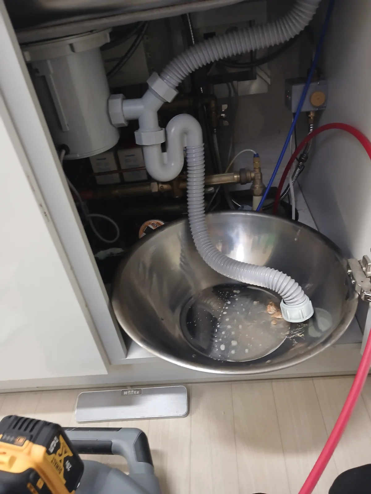

하남시 · 풍산동 · 싱크대막힘하남시 풍산동 싱크대막힘, 음식물 찌꺼기 역류 석션·내시경으로 해결싱크대 배수가 막히며 음식물 찌꺼기와 오염수가 역류한 현장에서 배관 내시경으로 내부를 점검하고 전문 석션 작업으로 배관 속 이물질을 제거했습니다.2026.09.07
하남시 · 미사동 · 변기막힘하남시 미사동 아파트 변기막힘, 석션 작업으로 커다란 망고씨 제거하남시 미사동 아파트 화장실에서 변기 물이 내려가지 않는 현장에 석션 작업을 진행해 내부 트랩 구간에 걸려 있던 커다란 망고씨를 제거했습니다.2026.08.19